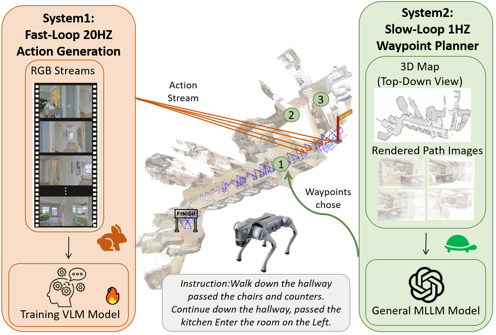

Vision-Language Navigation (VLN) approaches have currently followed two primary paradigms: the end-to-end Vision-Language Model (VLM) policy fine-tuned on navigation trajectories to directly predict actions, and the zero-shot modular pipeline integrating pre-trained Multimodal Large Language Model (MLLM) for training-free generalization to unseen environments. However, end-to-end methods struggle with long-horizon navigation and lack dynamic reasoning, whereas zero-shot methods are constrained by limited spatial grounding for reliable planning and also require substantial reasoning time. To bridge this gap, we introduce SEDualVLN, a spatially-enhanced dual-system VLN framework. System 1 is a VLM model enhanced with both global and local spatial awareness, used for action generation. System 2 integrates a general MLLM with a mapping module, wherein the MLLM plans waypoints by leveraging top-down views of the real-time 3D map alongside streams of rendered path images. Both systems leverage different forms of spatial enhancement to cultivate the agent’s sense of direction in VLN tasks. Ultimately, they cooperate to complete the navigation task through a fast-slow coordinated approach. SEDualVLN achieves state-of-the-art performance on VLN-CE benchmarks, and further ablation studies demonstrate the effectiveness of each system and module.

Fig.1: SEDualVLN pipeline
***